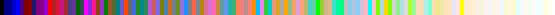
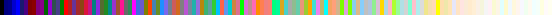

Formula to determine perceived brightness of RGB color
I'm looking for some kind of formula or algorithm to determine the brightness of a color given the RGB values. I know it can't be as simple as adding the RGB values together and having higher sums be brighter, but I'm kind of at a loss as to where to start.
Answer
The method could vary depending on your needs. Here are 3 ways to calculate Luminance:
-
Luminance (standard for certain colour spaces):
(0.2126*R + 0.7152*G + 0.0722*B)source  -
Luminance (perceived option 1):
(0.299*R + 0.587*G + 0.114*B)source  -
Luminance (perceived option 2, slower to calculate):
sqrt( 0.241*R^2 + 0.691*G^2 + 0.068*B^2 )sqrt( 0.299*R^2 + 0.587*G^2 + 0.114*B^2 )(thanks to @MatthewHerbst) source
[Edit: added examples using named css colors sorted with each method.]
Suggest
I think what you are looking for is the RGB -> Luma conversion formula.
Photometric/digital ITU BT.709:
Y = 0.2126 R + 0.7152 G + 0.0722 B
Digital ITU BT.601 (gives more weight to the R and B components):
Y = 0.299 R + 0.587 G + 0.114 B
If you are willing to trade accuracy for perfomance, there are two approximation formulas for this one:
Y = 0.33 R + 0.5 G + 0.16 B Y = 0.375 R + 0.5 G + 0.125 B
These can be calculated quickly as
Y = (R+R+B+G+G+G)/6 Y = (R+R+R+B+G+G+G+G)>>3